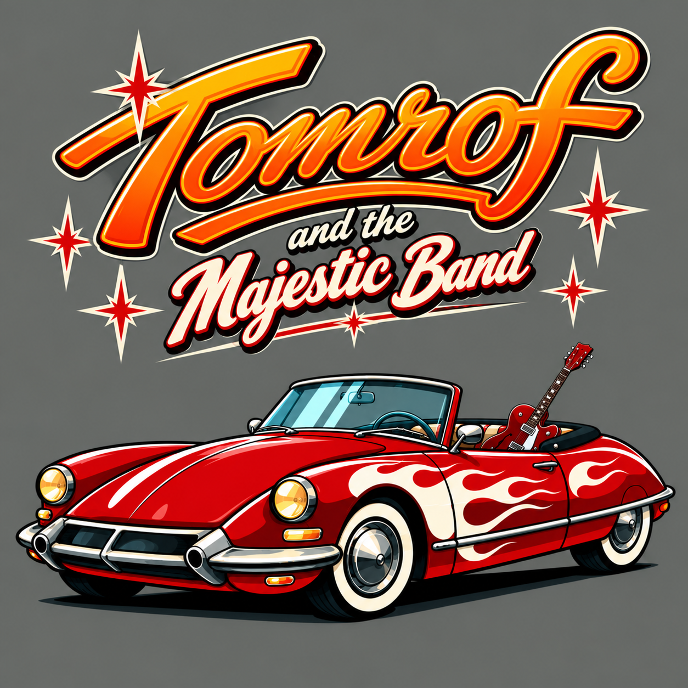
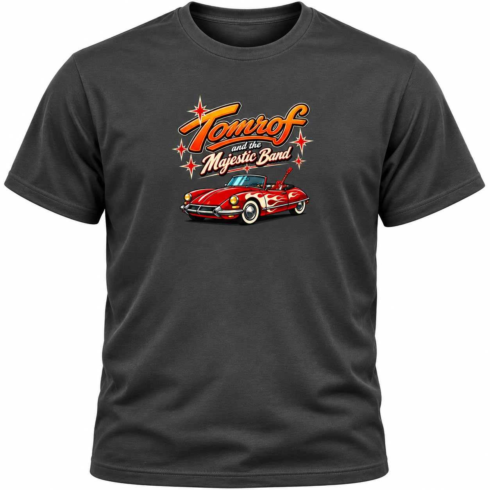
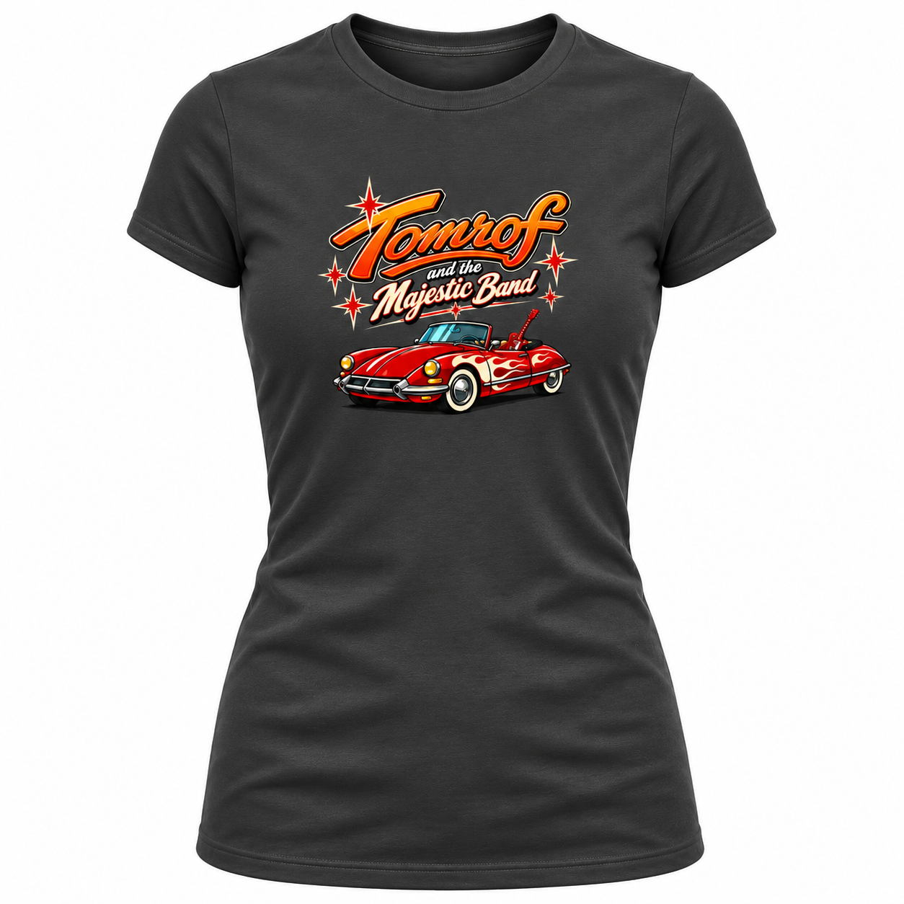
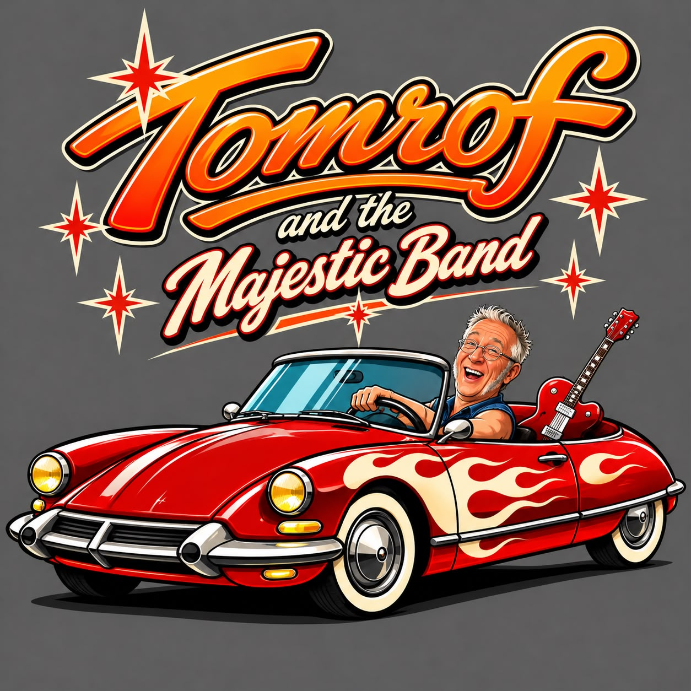

LE SON. LE STYLE. L’ÉNERGIE.
DU SWING
DANS LES CHROMES,
DU ROCK’N’ROLL
DANS L’MOTEUR.
Bienvenue dans l’univers de
Tomrof and the Majestic Band.

01 / SUR LE JUKEBOX
Musique & clips.
Appuyez sur play.
Le voyage commence ici.
LE CLIP À DÉCOUVRIR
Le clip du groupe
Tomrof and the Majestic Band
Le lecteur YouTube est chargé uniquement à votre demande. La lecture nécessite une connexion Internet.
Ouvrir sur YouTube ↗D’autres titres rejoindront le jukebox.
02 / THE MAJESTIC BAND
Une identité.
Un groupe.
Du caractère.
Tomrof
and the Majestic Band
Du swing de Cab Calloway à l’énergie des Clash, Tomrof and the Majestic Band fait rouler le rock’n’roll à sa manière. La fièvre des Stray Cats, un peu de la poésie cabossée de Tom Waits et du grain de folie des Cramps : des racines, du groove et du caractère, avec une seule envie, faire vibrer et donner envie de bouger.
Du swing dans les chromes, du rock’n’roll dans l’moteur.
Les biographies des musiciens arrivent prochainement.
Les biographies des autres musiciens sont en cours de rédaction.
03 / RENDEZ-VOUS DEVANT LA SCÈNE
En concert.
La suite se prépare.
Aucune date annoncée pour le moment. Les prochains concerts seront publiés ici.
04 / DANS LES COULISSES
Les actualités.
Les nouvelles du groupe arriveront ici. Aucune actualité publiée pour le moment.
Le tee-shirt
du Majestic Band.
Fabrication sur commande, sans stock.
Délai annoncé : 3 semaines après paiement.


Tee-shirt du groupe
- Standard · livraison comprise
- 20 €
- Personnalisé · livraison comprise
- 30 €
Toutes tailles. Coupe homme et modèle femme. Livraison comprise.
Précommander le standard
- Envoyez votre coupe, taille, nom et prénom et adresse complète de livraison par e-mail.
- Réglez ensuite 20 € sur PayPal, avec le même nom pour retrouver votre commande.
Le premier bouton ouvre un brouillon dans votre messagerie : pensez à l’envoyer. Aucun renseignement n’est enregistré par ce site. Le paiement se fait sur PayPal.
Un tee-shirt personnalisé ?

Décrivez votre demande par e-mail pour confirmer les possibilités avant tout paiement. Tarif annoncé : 30 €, livraison comprise.
1. Demander une personnalisation ↗Après confirmation de votre personnalisation par la boutique :
2. Payer le personnalisé · 30 € ↗Contact boutique : thetro35@gmail.com
05 / RESTONS CONNECTÉS
Gardez le rythme.
Le groupe à portée de main.
Ajoutez l’application à votre écran d’accueil.
Comment installer l’application ?
Sur iPhone ou iPad : ouvrez ce site dans Safari, puis Partager → Sur l’écran d’accueil. Sur Android ou PC : utilisez l’option « Installer » du navigateur si elle est proposée.
L’installation dépend du navigateur et nécessite HTTPS, ou localhost pour les essais.
Les liens officiels vers les réseaux du groupe seront ajoutés ici.